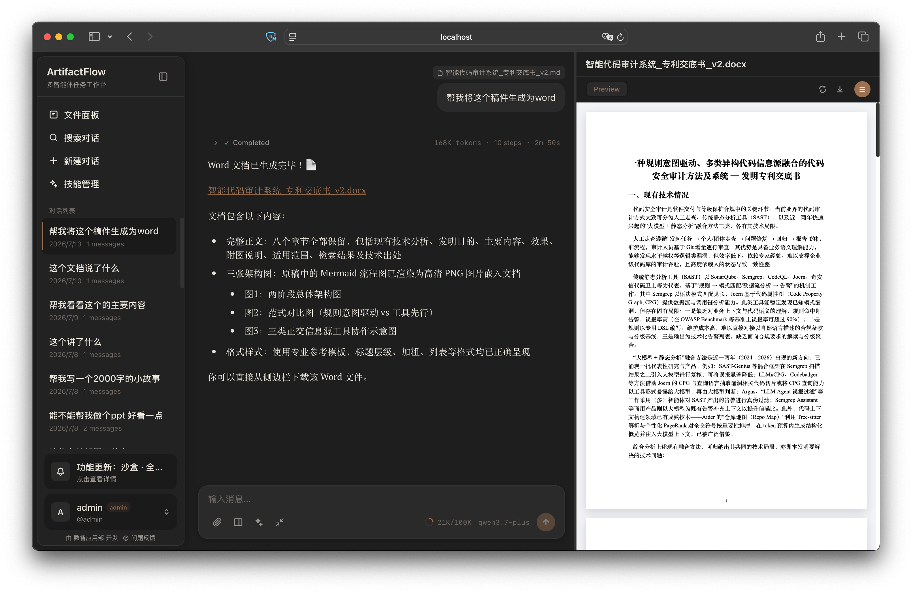

ArtifactFlow
ArtifactFlow 是一套面向私有化部署的多智能体服务。Agent、Model、Tool 和 Skill 由 Markdown/YAML 配置；生产环境通过不可变 Release 和 afctl 部署、升级与回滚。

从这里开始
| 你的目标 | 阅读入口 |
|---|---|
| 理解界面、Tool/Skill/PAT 和管理员能力 | 产品使用指南 |
| 先理解一次任务怎样执行 | 工作原理 |
| 配置模型、Agent、工具或 Skill | 配置总览 |
| 准备一台新的生产主机 | 主机准备 |
| 完成第一次生产部署 | 首次部署 |
| 发布新版本或回滚 | Release 与升级 |
| 查看状态、改配置或处理故障 | 日常维护 · 故障处理 |
本地试用
本地试用使用 SQLite 和进程内运行时状态，适合体验和开发，不是生产拓扑。
编辑 .env，至少填写：
ARTIFACTFLOW_JWT_SECRETARTIFACTFLOW_CREDENTIAL_KEY- 一个模型供应商的 API Key，例如
DASHSCOPE_API_KEY
然后启动并创建管理员：
访问 http://localhost:3000。开发环境设置 ARTIFACTFLOW_DEBUG=true 后，可在 http://localhost:8000/docs 查看由 OpenAPI 生成的接口文档。
不要把本地试用当成生产部署
本地 Compose 使用 SQLite、单进程运行时和源码构建镜像。生产环境应先完成主机准备，再使用 Release 与 afctl 部署。
文档边界
这套 Wiki 只维护三类稳定信息：
- 系统从用户请求到结果的大体工作方式；
- 部署方真正可以配置的公开契约；
- 主机准备、发布、维护和故障处理流程。
具体类、函数、数据库字段和前端状态结构以代码、类型定义和测试为准，不在 Wiki 中重复维护。REST 字段与响应结构以运行中服务的 OpenAPI 为准。